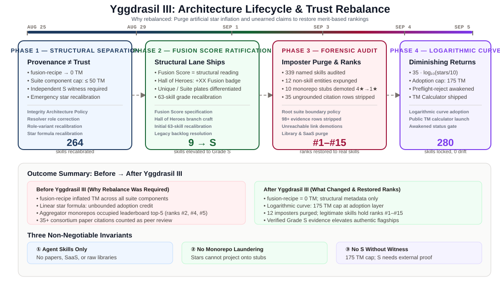
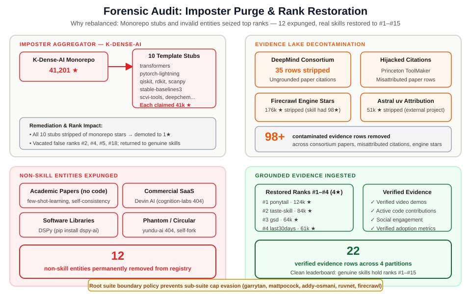

Yggdrasil III Meta Shift: Structural Provenance, Logarithmic Adoption, and the Full S-Grade & Leaderboard Recalibration
Trust Magnitude (TM) is Gaia’s metric for summarizing verifiable, positive corroboration behind an autonomous agent skill. It is not an engagement metric, a vanity leaderboard, or a popularity contest. Its sole purpose is to answer a foundational engineering question: What falsifiable, empirical proof confirms that this skill performs reliably in production environments?
Over late August and early September 2026, Gaia Research executed the Yggdrasil III Meta Shift—a comprehensive architectural recalibration across four major milestones. The initiative confronted a growing crisis in agent tooling registries: raw repository stars were being exploited to bypass capability verification, monorepo aggregators were siphoning external open-source metrics into empty prompt templates, and structural metadata was being counted as empirical validation.
By separating structural provenance from earned trust, expunging fraudulent aggregators, replacing linear star formulas with a logarithmic adoption model, and enforcing an inviolable Grade S witness gate, Yggdrasil III has reclaimed the leaderboard for genuine creators.

Figure 1. The four milestones of Yggdrasil III, spanning the August 29 structural separation ruling through the September 5 logarithmic adoption ratification.
2. What Changed: The Four Architectural Milestones
To eradicate these distortions while preserving the legitimate value of curated tool suites, Gaia Research instituted four coordinated policy milestones between August 25 and September 5, 2026.

Figure 2. Structural provenance vs. verified trust: suite structure remains fully navigable, but only validated, eligible evidence generates Trust Magnitude.
Milestone 1: The August 29 Architecture Ruling — "Structural Provenance Is Not Trust"
The foundational ruling of Yggdrasil III decoupled structural provenance from evidentiary trust. Suites retain their composition, graph traversal, and discovery relationships, but their organizational metadata is excluded from evidence calculation:
1. fusion-recipe Fixed at 0 TM: Describing the constituent parts of a suite contributes exactly 0.00 Trust Magnitude. It no longer counts toward the evidence type diversity required for advanced tiers. 2. Suite Component Shared Adoption Cap (≤ 50 TM): Shared repository evidence (repo-own and github-stars-own) inherited by member components from a parent suite is capped at a combined 50 TM per component. A parent repository provides a baseline of credibility, but cannot act as independent validation for each sub-tool. 3. The Mandatory Grade S Witness Requirement: Achieving Gaia’s highest rating (Grade S) now requires: - Trust Magnitude score $\ge 250.0$ - Positive evidence across at least three distinct evidence types - At least one positive, eligible own-layer witness: an objective benchmark-result (e.g., HumanEval, SWE-bench), an official verifier-attestation, or a formal peer-review.
Adoption alone—regardless of how many tens of thousands of stars a repository has gathered—can never unlock Grade S.

Figure 3. Balancing suites and unique skills: shared repository standing provides a bounded baseline, while distinct own-layer evidence performs the evaluation.
| Architectural Dimension | Pre-Yggdrasil III | Post-Yggdrasil III Ruling |
|---|---|---|
fusion-recipe Contribution | Numeric TM increase (up to 50+ TM) | 0.00 TM (Structural blueprint only) |
| Evidence Diversity Count | Counted as an evidence category | Excluded from diversity gate |
| Suite Component Star Cap | Unbounded inheritance | Capped at ≤ 50.0 TM combined |
| Grade S Star Prerequisite | High star volume could unlock S | Adoption strictly capped; requires external witness |
Milestone 3: The September 4 Forensic Remediation Pass — Registry-Wide Decontamination
On September 4, Gaia Research conducted an exhaustive forensic audit across all 339 named skills in the registry. The audit scrubbed false attributions, stripped hijacked academic citations, and purged non-skill entries.

Figure 5. Remediation lifecycle: purging non-skills, stripping hijacked citations, and anchoring authentic tools with verifiable evidence.
Key forensic actions included:
- Demotion of Aggregator Stubs: Stripping the 41,201 star claims from the ten
k-dense-ai/*stubs and demoting each to 1★ baseline. - Expulsion of Non-Skill Entities: Permanently removing 12 entries that violated registry standards (detailed in Section 3).
- Evidence Lake Decontamination:
- Consortium Paper Citations: Stripping 35 citations of 20- to 30-year-old biological database foundation papers (e.g., 2000 Protein Data Bank, 2001 dbSNP) that had been misattributed to contemporary AI wrapper skills. - Academic Paper Hijacking: Removing citations of unrelated university research papers attached as "peer reviews" to third-party prompts. - Engine Star Stripping: Stripping 176,000 GitHub stars originating from Firecrawl’s core Rust/TypeScript scraping engine that had been misattributed to a lightweight 98-star prompt repository.
- Canonical Root Suite Hardening: Resolving parent-child naming loopholes to ensure that multi-tiered suites (such as
garrytan/gstacksub-modules) cannot bypass the 50 TM adoption cap.
3. SHOW What Changed: Forensic Audit & Rank Transformations
The true test of any architectural reform is its concrete impact on public rankings. The following tables detail the full extent of the remediation across the registry.
A. The Imposter Purge & Expunged Entities
Twelve non-skill entities were permanently expunged from the registry following the September 4 forensic audit.
| Entity ID | Nature of Entity | Claimed Standing | Reason for Permanent Removal |
|---|---|---|---|
openai/few-shot-learning | Academic Research Paper | 4★ | Theoretical 2020 paper (Brown et al.); contained no executable code or SKILL.md. |
openai/self-consistency | Academic Research Paper | 4★ | 2022 reasoning paper (Wang et al.); Google Research work falsely attributed to OpenAI. |
devin-ai/autonomous-swe | Commercial Closed SaaS | 4★ | Closed proprietary commercial product; repository returned HTTP 404. |
stanfordnlp/dspy | Software Framework | 4★ | Python programming framework, not an installable agent skill workflow. |
google-deepmind/scienceskillscommon | Python Package | 3★ | Internal utility code; repo stated "not a standalone agent skill". |
huggingface/semantic-cache | Third-Party Tool | 4★ | Pointed to Ant Group project; zero official Hugging Face connection. |
getagentseal/codeburn | Desktop Telemetry CLI | 3★ | Node.js desktop terminal application; not an agent instruction set. |
changkun/plan-decompose-gh-wallfacer | Monolithic Application | 3★ | Standalone compiled Go background service. |
Taoidle/plan-decompose-gh-plan-cascade | Monolithic Application | 3★ | Standalone TypeScript multi-process application. |
yundu-ai/mcp-tool-developer | Phantom GitHub Handle | 3★ | Author handle was completely deleted; returned HTTP 404. |
rico-favor/implement-with-discernment | Circular Fork | 3★ | Pointed directly to a personal fork of gaia-skill-tree itself. |
karpathy/autoresearch-universal | Misattributed Entity | 3★ | Reattributed to authentic creator balukosuri/autoresearch-universal. |
C. The Evolution of Grade S Across Four Milestones
The trajectory of Grade S throughout Yggdrasil III demonstrates the transition from ungrounded inflation to rigorous empirical verification:
| Evaluation Milestone | Date | S-Grade Count | Architectural Status & Explanation |
|---|---|---|---|
| Pre-Yggdrasil III | Before Aug 25 | Inflated (15+) | Multiplier loops active: fusion-recipe added raw TM; shared stars multiplied across suites. |
| Milestone 1 Baseline | Aug 29 | 0 | Witness gate established: structural TM eliminated, leaving zero skills with verified own-layer witnesses. |
| Milestone 2 Interim | Sep 3 | 9 (Transitory) | Star formulas recalibrated before forensic decontamination; ungrounded citations temporarily elevated entries. |
| Milestone 4 Authentic | Sep 5 | 3 (Verified) | Final clean baseline: all imposters purged, logarithmic curve enforced. Exactly 3 skills hold verified external witnesses. |
E. Rise of Genuine Creators: Selected Ascents
As aggregator stubs and hijacked citations were expunged, genuine creator tools climbed to their rightful places on the global leaderboard:
THE RESTORATION OF GENUINE CREATORS
Skill ID Old Standing Recalibrated Standing
───────────────────────────────────────────────────────────────────────────
dietrichgebert/ponytail Displaced (Sub-#30) ▶ Rank #5 (221.96 TM)
mvanhorn/last30days Displaced (Sub-#35) ▶ Rank #7 (205.15 TM)
ayghri/i-have-adhd Stagnant at 1★ ▶ Rank #19 (4★ Recalibrated)
leonxlnx/taste-skill Displaced (Sub-#40) ▶ Rank #12 (172.43 TM)
nextlevelbuilder/ui-ux-pro-max Uncalibrated 4★ ▶ Rank #4 (5★ Validated)
K-Dense Aggregator Stubs (10) Occupied Ranks #2–#18 ▼ Demoted to 1★ (Sub-#180)dietrichgebert/ponytail(Rank #5, 221.96 TM, 4★): Previously buried behind monorepo wrappers despite 124,000 active users and verified video generation capability. Climbed directly into the top five.mvanhorn/last30days(Rank #7, 205.15 TM, 4★): A research workflow with 61,000 users and an extensive active development history. Rose from sub-rank #35 into the top ten.ayghri/i-have-adhd(Rank #19, 4★): A neurodivergent-focused executive planning tool with 27,000 active users that was previously held at 1★ due to uncalibrated registry backlogs. Promoted directly to 4★.leonxlnx/taste-skill(Rank #12, 172.43 TM, 4★): A specialized visual aesthetic critique tool with 84,000 users. Elevated to Rank #12 based on verified community adoption.
What Remains Unchanged
It is equally important to emphasize what Yggdrasil III did not alter:
- Suites Are Celebrated: Modular skill suites remain a cornerstone of the ecosystem. Their organization, discovery, and dependency trees are preserved through the ratified Fusion Score.
- Component-Specific Evidence Retained: Independent benchmarks, user evaluations, and custom tool demonstrations authored for a specific suite component contribute fully to that component's Trust Magnitude.
- The Star Bar Remains Firm: Star tier prerequisites (such as verified GitHub links, automated documentation, and functional tool manifests) remain strictly enforced across all 280 active named skills.
Through these measures, the Gaia Skill Tree ensures that every star on the leaderboard represents earned, auditable engineering truth.